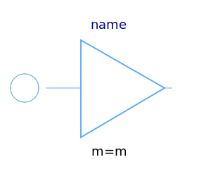
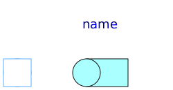
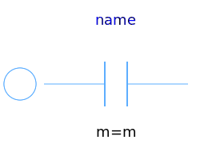
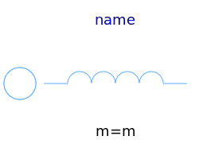
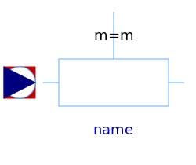
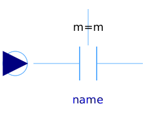

This package hosts basic models for quasi stationary multiphase circuits. Quasi stationary theory can be found in the references.
| Name | Description |
|---|---|
| Star connection | |
|  Delta | Delta (polygon) connection |
|
|
Connect one (positive) pin |
|
|
Connect one (negative) pin |
|
|
Connect all (positive) pins |
|  PlugToPins_n | Connect all (negative) pins |
|
|
Multiphase linear resistor |
|
|
Multiphase linear conductor |
|  Capacitor | Multiphase linear capacitor |
|  Inductor | Multiphase linear inductor |
|
|
Multiphase variable resistor |
|  VariableConductor | Multiphase variable conductor |
|  VariableCapacitor | Multiphase variable capacitor |
|
|
Multiphase variable inductor |